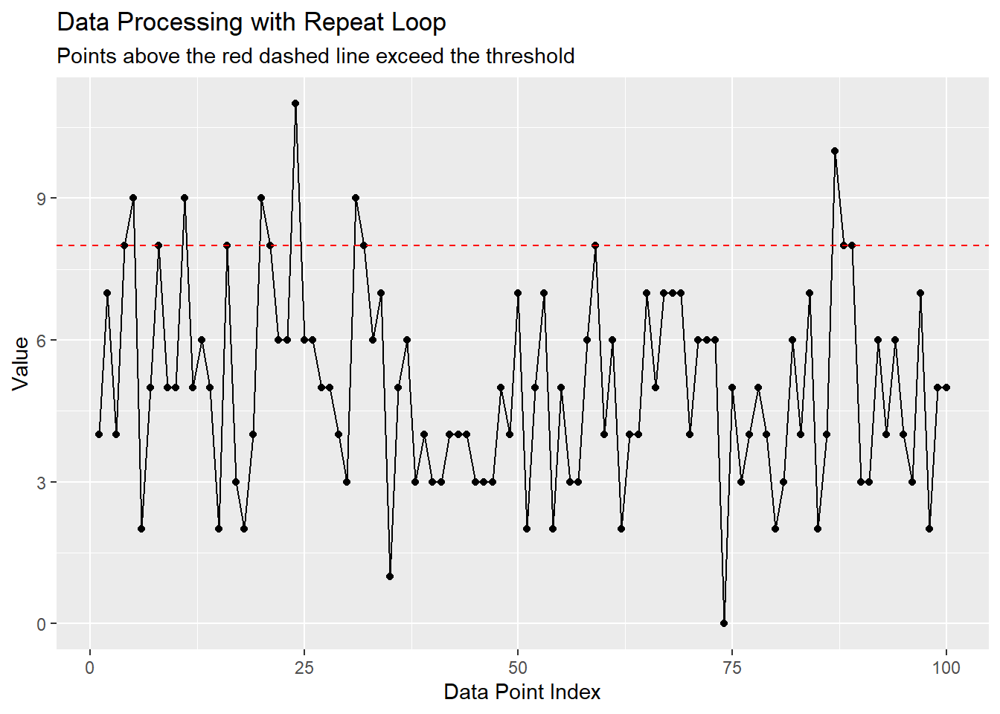

How to Write a Repeat Loop in R: Complete Guide with Practical Examples
Discover how to effectively use repeat loops in R programming with this comprehensive guide. Explore practical examples, best practices, and common pitfalls to enhance your coding skills. Perfect for R programmers looking to master iteration control structures!
code
rtip
Author
Steven P. Sanderson II, MPH
Published
April 7, 2025
Keywords
Programming, repeat loop in R, R programming loops, R control structures, R iteration techniques, programming in R, R repeat loop examples, using repeat loops in R, R programming best practices, R loop structures, R programming for data analysis, how to write a repeat loop in R, practical examples of repeat loops in R, avoiding infinite loops in R programming, numerical algorithms using repeat loops in R, user input validation with repeat loops in R
Introduction
The repeat loop is one of R’s powerful iteration structures that allows code to execute continuously until a specific condition is met. While loops like for and while are more commonly used in R programming, the repeat loop offers unique advantages in certain scenarios, particularly when you need a loop to continue indefinitely until a specific condition triggers a break.
In this comprehensive guide, we’ll explore everything you need to know about writing effective repeat loops in R. From basic syntax to advanced implementation strategies, we’ll cover practical examples that demonstrate the versatility and power of this control structure. Whether you’re new to R programming or looking to refine your iteration techniques, this article will provide you with the knowledge to use repeat loops confidently in your projects.
Understanding the Repeat Loop in R
What Is a Repeat Loop?
The repeat loop in R is an indefinite loop that continues execution until explicitly stopped with a break statement. Unlike for loops that iterate a pre-defined number of times, or while loops that check a condition before each iteration, repeat loops run continuously until they encounter a breaking condition within the loop body.
Basic Syntax
The syntax of a repeat loop in R is remarkably simple:
repeat {# Code to executeif (condition) {break# Exit the loop when condition is TRUE }}
This simplicity makes repeat loops easy to write, but it also means programmers must be careful to include a valid exit condition to prevent infinite loops.
When to Use Repeat Loops
Repeat loops are particularly useful in scenarios where:
You need a loop to run at least once regardless of conditions
The exit condition is complex or depends on calculations inside the loop
You want to create a loop that continues until a specific event occurs
The number of iterations cannot be determined beforehand
Repeat vs. While vs. For Loops
Loop Type
Pre-test Condition
Guaranteed Execution
Use Case
repeat
No
At least once
When you need to execute code at least once and continue until a condition is met
while
Yes
Only if condition is initially TRUE
When you want to check a condition before executing any loop code
for
N/A
Based on the sequence length
When you know exactly how many iterations you need
Basic Example: Repeat Loop in R
Let’s start with a simple example to illustrate the basic structure of a repeat loop:
In this example, the loop executes five times, printing the iteration number each time. On the sixth iteration, when counter becomes 6, the condition counter > 5 becomes TRUE, and the loop terminates with the break statement.
Practical Example 1: Finding a Random Number That Meets Criteria
In this example, we’ll use a repeat loop to generate random numbers until we find one that meets our criteria:
# Set seed for reproducible resultsset.seed(123)# Initialize variablesattempts <-0target_value <-0.9# Start repeat looprepeat {# Generate a random number random_value <-runif(1)# Increment attempt counter attempts <- attempts +1# Print the current random valuecat("Attempt", attempts, ": Generated value =", random_value, "\n")# Check if we've found a value >= our targetif (random_value >= target_value) {cat("\nSuccess! Found value >=", target_value, "after", attempts, "attempts.\n")break }# Optional: Add a safety exit to prevent potential infinite loopsif (attempts >=100) {cat("\nReached maximum attempts. Exiting.\n")break }}
Attempt 1 : Generated value = 0.2875775
Attempt 2 : Generated value = 0.7883051
Attempt 3 : Generated value = 0.4089769
Attempt 4 : Generated value = 0.8830174
Attempt 5 : Generated value = 0.9404673
Success! Found value >= 0.9 after 5 attempts.
When you run this code, it will generate random numbers between 0 and 1 until it finds one that’s greater than or equal to 0.9, or until it reaches 100 attempts. This is a practical use case for a repeat loop because:
We don’t know in advance how many iterations will be needed
We want to keep generating numbers until we find one that satisfies our condition
Practical Example 2: User Input Validation
Repeat loops are excellent for validating user input. Let’s create a function that prompts the user for input within a specific range:
get_validated_input <-function(min_value, max_value) {repeat {# Prompt for user input user_input <-as.numeric(readline(prompt =paste0("Please enter a number between ", min_value, " and ", max_value, ": ") ))# Check if the input is validif (!is.na(user_input) && user_input >= min_value && user_input <= max_value) {# Valid input, return the value and exit the loopreturn(user_input) } else {# Invalid input, print error message and loop continuescat("Invalid input! Please enter a number between", min_value, "and", max_value, "\n") } }}# Use the functionvalid_number <-get_validated_input(1, 10)cat("You entered:", valid_number, "\n")
In this example, the repeat loop continues to prompt the user until they enter a valid number within the specified range. The function returns the valid input, effectively breaking out of the loop.
Practical Example 3: Numerical Algorithm - Newton-Raphson Method
The repeat loop is particularly useful for numerical algorithms where iterations continue until convergence. Here’s an implementation of the Newton-Raphson method for finding the square root of a number:
newton_sqrt <-function(x, tolerance =1e-10, max_iterations =100) {if (x <0) stop("Cannot compute the square root of a negative number")if (x ==0) return(0)# Initial guess guess <- x /2# Iteration counter iterations <-0# Newton-Raphson iterationrepeat {# Calculate next approximation next_guess <-0.5* (guess + x / guess)# Increment counter iterations <- iterations +1# Calculate the relative error error <-abs(next_guess - guess) /abs(next_guess)# Print current iteration informationcat("Iteration", iterations, ": approximation =", next_guess, ", error =", error, "\n")# Update guess guess <- next_guess# Exit conditionsif (error < tolerance) {cat("\nConverged after", iterations, "iterations.\n")return(guess) }if (iterations >= max_iterations) {warning("Maximum iterations reached without convergence")return(guess) } }}# Test the functionresult <-newton_sqrt(25)
This example demonstrates a practical application of the repeat loop in a numerical algorithm. The loop continues until either: 1. The approximation converges (the error is less than the specified tolerance) 2. The maximum number of iterations is reached
The Newton-Raphson method rapidly converges to the correct square root value, making this a computationally efficient approach.
Practical Example 4: Monte Carlo Simulation
Repeat loops can be useful in simulation scenarios where you need to continue until certain criteria are met. Let’s use a repeat loop to estimate π using the Monte Carlo method:
estimate_pi <-function(desired_accuracy =0.001, max_points =1000000) {# Initialize counters points_inside_circle <-0 total_points <-0 current_estimate <-0 previous_estimate <-0# Set seed for reproducibilityset.seed(42)# Start simulationrepeat {# Generate a batch of random points batch_size <-1000 x <-runif(batch_size, -1, 1) y <-runif(batch_size, -1, 1)# Count points inside unit circle inside <-which(x^2+ y^2<=1) points_inside_circle <- points_inside_circle +length(inside) total_points <- total_points + batch_size# Calculate pi estimate previous_estimate <- current_estimate current_estimate <-4* points_inside_circle / total_points# Calculate change in estimate change <-abs(current_estimate - previous_estimate)# Print progress every 10,000 pointsif (total_points %%10000==0) {cat("Points:", total_points, "| π estimate:", current_estimate, "| Change:", change, "\n") }# Exit conditionsif (total_points >10000&& change < desired_accuracy) {cat("\nReached desired accuracy after", total_points, "points.\n")break }if (total_points >= max_points) {cat("\nReached maximum number of points.\n")break } }cat("\nFinal π estimate:", current_estimate, "\n")cat("Actual π value:", pi, "\n")cat("Absolute error:", abs(current_estimate - pi), "\n")return(current_estimate)}# Run the simulationpi_estimate <-estimate_pi(desired_accuracy =0.0001)
This example demonstrates how a repeat loop can be used in a simulation that continues until a specific accuracy level is achieved or a maximum number of iterations is reached.
Practical Example 5: Data Processing with Early Termination
Repeat loops can be useful when processing data streams or files where you might need to terminate early based on certain conditions:
process_data_until_threshold <-function(threshold =10) {# Initialize counters and storage total_processed <-0 values_above_threshold <-0 all_data <-numeric(0)# Create synthetic data (normally this would be a file or data stream)set.seed(123) data_stream <-function() {return(rpois(1, lambda =5)) # Generate a random Poisson value }# Process datarepeat {# Get next data point next_value <-data_stream()# Add to storage all_data <-c(all_data, next_value)# Update counters total_processed <- total_processed +1if (next_value > threshold) { values_above_threshold <- values_above_threshold +1 }# Print status every 5 itemsif (total_processed %%5==0) {cat("Processed", total_processed, "items. Found", values_above_threshold, "values above threshold.\n") }# Exit condition: if we've found 10 values above the thresholdif (values_above_threshold >=10) {cat("\nReached target of", values_above_threshold, "values above threshold after processing", total_processed, "items.\n")break }# Safety exit to prevent infinite loopsif (total_processed >=100) {cat("\nReached maximum processing limit of 100 items.\n")break } }# Return the processed datareturn(list(data = all_data,total_processed = total_processed,values_above_threshold = values_above_threshold ))}# Run the data processingresult <-process_data_until_threshold(threshold =8)
Processed 5 items. Found 1 values above threshold.
Processed 10 items. Found 1 values above threshold.
Processed 15 items. Found 2 values above threshold.
Processed 20 items. Found 3 values above threshold.
Processed 25 items. Found 4 values above threshold.
Processed 30 items. Found 4 values above threshold.
Processed 35 items. Found 5 values above threshold.
Processed 40 items. Found 5 values above threshold.
Processed 45 items. Found 5 values above threshold.
Processed 50 items. Found 5 values above threshold.
Processed 55 items. Found 5 values above threshold.
Processed 60 items. Found 5 values above threshold.
Processed 65 items. Found 5 values above threshold.
Processed 70 items. Found 5 values above threshold.
Processed 75 items. Found 5 values above threshold.
Processed 80 items. Found 5 values above threshold.
Processed 85 items. Found 5 values above threshold.
Processed 90 items. Found 6 values above threshold.
Processed 95 items. Found 6 values above threshold.
Processed 100 items. Found 6 values above threshold.
Reached maximum processing limit of 100 items.
# Plot the dataif (requireNamespace("ggplot2", quietly =TRUE)) {library(ggplot2) data_df <-data.frame(index =1:length(result$data),value = result$data )ggplot(data_df, aes(x = index, y = value)) +geom_line() +geom_point() +geom_hline(yintercept =8, linetype ="dashed", color ="red") +labs(title ="Data Processing with Repeat Loop",subtitle ="Points above the red dashed line exceed the threshold",x ="Data Point Index",y ="Value" )}

This example demonstrates using a repeat loop for data processing with early termination when certain conditions are met—specifically, when we’ve found 10 values above our threshold.
Your Turn! Creating a Repeat Loop Challenge
Now that you’ve seen several examples, it’s your turn to practice. Try writing a repeat loop to implement a binary search algorithm that finds the position of a target value in a sorted vector.
Here’s the problem:
Create a function that takes a sorted vector and a target value
Use a repeat loop to perform a binary search
Return the position of the target or -1 if not found
See Solution
binary_search <-function(sorted_vector, target) {# Initialize search boundaries left <-1 right <-length(sorted_vector) iterations <-0# Start binary search using a repeat looprepeat { iterations <- iterations +1# Calculate midpoint mid <- left +floor((right - left) /2)# Print current search statecat("Iteration", iterations, ": Searching between positions", left, "and", right, "| Looking at position", mid, "\n")# Check if we've found the targetif (sorted_vector[mid] == target) {cat("\nFound target", target, "at position", mid, "after", iterations, "iterations.\n")return(mid) }# If we can't narrow the search further, the target isn't in the vectorif (left >= right) {cat("\nTarget", target, "not found after", iterations, "iterations.\n")return(-1) }# Update search boundariesif (sorted_vector[mid] < target) { left <- mid +1# Search in the right half } else { right <- mid -1# Search in the left half } }}# Test the binary search functionsorted_data <-c(1, 3, 5, 7, 9, 11, 13, 15, 17, 19)position <-binary_search(sorted_data, 13)
Iteration 1 : Searching between positions 1 and 10 | Looking at position 5
Iteration 2 : Searching between positions 6 and 10 | Looking at position 8
Iteration 3 : Searching between positions 6 and 7 | Looking at position 6
Iteration 4 : Searching between positions 7 and 7 | Looking at position 7
Found target 13 at position 7 after 4 iterations.
cat("Position returned:", position, "\n")
Position returned: 7
# Try with a value not in the arrayposition <-binary_search(sorted_data, 6)
Iteration 1 : Searching between positions 1 and 10 | Looking at position 5
Iteration 2 : Searching between positions 1 and 4 | Looking at position 2
Iteration 3 : Searching between positions 3 and 4 | Looking at position 3
Iteration 4 : Searching between positions 4 and 4 | Looking at position 4
Target 6 not found after 4 iterations.
cat("Position returned:", position, "\n")
Position returned: -1
The binary search is an efficient algorithm for finding items in a sorted collection. A repeat loop works well here because the search continues until either the target is found or the search space is exhausted.
Common Pitfalls and Best Practices
Avoiding Infinite Loops
The most significant risk with repeat loops is creating an infinite loop. Always ensure your loop has:
A clear exit condition
A properly incremented counter or changed state
A safety exit (like a maximum iteration count)
# BAD EXAMPLE - Potential infinite loop with no safety exitrepeat { value <-process_data()if (value == target) {break }}# GOOD EXAMPLE - With safety exititerations <-0repeat { value <-process_data() iterations <- iterations +1if (value == target || iterations >= max_iterations) {break }}
Using next for Skipping Iterations
Like other loop structures in R, repeat loops support the next statement to skip to the next iteration:
repeat { x <-get_next_value()# Skip negative valuesif (x <0) {next }# Process positive valuesprocess(x)if (exit_condition) {break }}
Tracking Progress in Long-Running Loops
For long-running repeat loops, it’s good practice to provide progress updates:
When working with large datasets in repeat loops, be mindful of memory usage:
# Inefficient - Grows the vector on each iterationresult <-numeric(0)repeat {# Process data new_value <-process_next()# Append to results (inefficient for large datasets) result <-c(result, new_value)if (exit_condition) {break }}# More efficient - Pre-allocate and fillmax_size <-10000result <-numeric(max_size)index <-0repeat {# Process data index <- index +1 result[index] <-process_next()if (exit_condition || index >= max_size) {break }}# Trim unused elements if neededresult <- result[1:index]
Key Takeaways
Repeat loops in R continue indefinitely until explicitly stopped with a break statement
They are useful when:
You need at least one iteration regardless of conditions
The exit condition depends on calculations inside the loop
The number of iterations cannot be determined in advance
Always include a valid exit condition to prevent infinite loops
Consider adding a safety exit based on a maximum iteration count
Use next to skip to the next iteration when needed
Pre-allocate memory when building large data structures in loops
Track and display progress for long-running operations
Repeat loops are more flexible than while loops but require more careful implementation
Conclusion: Mastering Repeat Loops in R Programming
The repeat loop is a powerful and flexible control structure in R that provides an elegant solution for scenarios requiring indefinite iteration until specific conditions are met. While it may be used less frequently than for and while loops, understanding and mastering repeat loops adds a valuable tool to your R programming arsenal.
By following the best practices outlined in this guide and studying the provided examples, you’ll be equipped to implement efficient and effective repeat loops in your own code. Remember to always include appropriate exit conditions, consider memory management for large operations, and implement progress tracking for long-running loops.
Whether you’re developing numerical algorithms, processing data streams, implementing simulations, or handling user interactions, the repeat loop offers a straightforward approach to solving problems that require continuous execution with conditional termination.
What repeat loop applications will you explore in your R programming journey?
FAQs About Repeat Loops in R
Q1: When should I use a repeat loop instead of a while loop?
A: Use a repeat loop when you need to execute the code block at least once regardless of conditions, or when the exit condition depends on calculations performed inside the loop. While loops check the condition before the first iteration, so they might not execute at all if the condition is initially false.
Q2: How do I prevent infinite loops in repeat structures?
A: Always include a clear exit condition with a break statement, and consider adding a safety exit based on a maximum number of iterations. Make sure variables in your exit condition change during each iteration.
Q3: Can I use multiple break statements in a single repeat loop?
A: Yes, you can use multiple break statements in different parts of your repeat loop to exit under various conditions. However, using too many exit points can make code harder to understand and maintain.
Q4: Is there a performance difference between repeat, while, and for loops?
A: The performance differences between these loop types in R are usually negligible. Choose the loop structure based on readability and logical fit for your specific use case rather than performance concerns.
Q5: Can repeat loops be used in R functions like apply(), lapply(), etc.?
A: No, the apply family of functions in R uses its own iteration mechanism and doesn’t support custom loop structures like repeat. Use repeat loops in regular R functions rather than trying to integrate them with apply-type functions.
Share Your Experience!
Have you developed an interesting application using repeat loops in R? Share your implementation in the comments below! We’d love to see how you’re using this versatile control structure in your own projects.